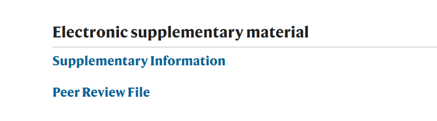

NC评审意见解析
尽管评审意见会因为学科差异、评审个人习惯、宗教等因素而出现差异，但是经过分析，其结构大抵均遵循一个共同的原则或者纲领：
1、总体评价论文，包括其贡献、方法合理性、结论成立等等；
2、提出关键问题；
3、提出对该篇文章的收录建议或是拒绝录用建议；
4、具体评论。
体验一次成为同行评审专家的感觉 更多NC评审意见结构解析
1、单盲评审(编辑部在线 送审给审稿专家，作者信息对专家开放，而送审信息不对作者开放）；
2、双盲评审(编辑部在线送审给审稿专家，作者信息并不对专家开放，送审信息也不对作者开放）；
3、公开评审（通过网络平台，作者和审稿人姓名互相公开)；
4、发表后评审(文章在线发布后，允许所有人进行评议)。
Learn more
作为全球最具影响力的学术期刊之一，《Nature Communications》做出一项尝试：
在期刊征得作者同意后，公开论文同行评议的内容，旨在评判“公开”是否能让学术活动的评估更可靠、更人人平等。
Nature Communications的“公开”实验并非强制性的，效果相当不错。在2016 年，期刊上60%的作者同意公开同行评议的内容，当然，公开评语时，出于对评审人的保护，期刊隐藏了评审人的姓名。
之后NC把透明同行评议作为长期制度采用。其目标是通过提供让编辑作出决定发布论文的相关信息，将同行评议过程开放化。论文一旦被采用，作者将被询问是否同意将审稿报告和最终被接受的论文版本一起发布。
读者们可以在官网文章展开界面的Supplementary 信息当中找到peer review的过程信息。
Nature Communications.com
文章是否与期刊的领域相符？
文章能否让期刊读者产生兴趣？
或您是否建议作者重新考虑将文章刊登在其他相关期刊上？
提交的稿件是否切合题目并为原创？
是否包含明显的已经出版内容？
是否可以在研究领域内拓展或进一步研究？
研究是否领域前沿或当前热点？
其重要性和潜在影响力程度如何？
文章是否明显基于（作者的）前期研究？
文章是否能够引发其他研究者引用的兴趣？
文章长度是否合理以保持充分的趣味性？
文章应包含所有必要的、相关的信息同时尽量简短，避免冗长。是否可以精简并考虑其它形式？
文章是否使用标准英文以便读者理解？文笔是否简练准确？
是否有摘要或工作简述（如需要）及结论部分？如果有，他们是否恰当地总结出文章的主要发现/方法？是否形成有力，高标准的结论？表格和图表是否清晰可读并且标注准确？
稿件呈现的论证方法和分析是否精确并正确开展？是否形成有力，高标准的结论？
文章是否完整？作者是否提供全部相关附件数据、引用或参考文献？
查看评审重点关注属性据nature communications的公开报告显示，自2016年开始开放同行评审文件，在第一年数据开放达到60%，2019年达到69%，按最低60%的开放率算，有同行评审文件的录用文章大概有23668*60%=14200篇。
评审意见内容包括评审专家的评审意见以及作者的回复，仅有录用文章的评审意见
尽管评审意见会因为学科差异、评审个人习惯、宗教等因素而出现差异，但是经过分析，其结构大抵均遵循一个共同的原则或者纲领：
1、总体评价论文，包括其贡献、方法合理性、结论成立等等；
2、提出关键问题；
3、提出对该篇文章的收录建议或是拒绝录用建议；
4、具体评论。
体验一次成为同行评审专家的感觉 更多NC评审意见结构解析
在这里，我们制作了《nature communications》中自2016至今的所有已经开放评审意见的论文原文与评审意见映射，目的是帮助投稿者更直观地了解评审所关注的重点内容。
并且，我们考虑到每个学科的差异，分别制作了每个学科的mapping分类，以及重点属性排序。
论文原文与评审意见映射 学科mapping
在《nature》官网，他们提供了详细的同行评审政策，用于介绍《nature》及其子期刊的审查政策。
其中，投稿者或者其他兴趣人员可能会感兴趣和关注的问题是——paper从投稿到发表的背后的审查流程：
1、第一轮筛选：所有提交的手稿均由编辑人员阅读，只有那些似乎最有可能符合编辑人员编辑标准的论文才会被送去进行正式审查；
2、第二轮筛选：手稿被发送到同行评审者手中进行正式审查，通常发送给两到三个审阅者；
3、编辑根据审阅者的建议，从接受、拒绝、重新修改几个可能性中做出决定。
在这里，我们给出《nature》的相关政策链接和《nature communications》的同行评审链接，帮助您更好的了解相关内容
《nature communications》同行评审 《nature》评审政策
《nature communications》对作者所提供的论文有明确的要求，包括应该注意的基本格式、与评审交流等等。
在这里，我们向您提供向《nature communication》投稿的详细要求，以及先前国内投稿人的投稿经历分享链接。以便您更便捷地查阅和阅读。
guide for submission to Nature Communicationsmore 投稿经验分享（NatureCommunications） nature communications投稿之旅 NC 期刊论坛南京理工大学经济管理学院信管系
Copyright © 2021. NC新视野. All Rights Reserved.